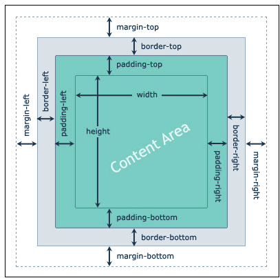

What Is CSS Box Model?
The CSS box model is a container that contains multiple properties including borders, margin,
padding, and the content itself. It is used to create the design and layout of web pages. According
to the CSS box model, the web browser supplies each element as a square prism.
The following diagram illustrates the box model.

The CSS box model contains the different properties in CSS. These are listed below.
- Border
- Margin
- Padding
- Content
Border Field
It is a region between the padding-box and the margin. Its proportions are determined by the width
and height of the boundary.
The thickness of the borders are determined by the border-width and shorthand border properties. If
the box-sizing property is set to border-box, the border area's size can be explicitly defined with
the width, min-width, max-width, height, min-height, and max-height properties. When there is a
background (background-color or background-image) set on a box, it extends to the outer edge of the
border (i.e. extends underneath the border in z-ordering). This default behavior can be altered with
the background-clip CSS property.
Margin Field
This segment consists of the area between the boundary and the edge of the border.
The proportion of the margin region is equal to the margin-box width and height. It is better to
separate the product from its neighbor nodes.
The size of the margin area is determined by the margin-top, margin-right, margin-bottom,
margin-left, and shorthand margin properties. When margin collapsing occurs, the margin area is not
clearly defined since margins are shared between boxes.
Padding Field
This field requires the padding of the component. In essence, this area is the space around the
subject area and inside the border-box. The height and the width of the padding box decide its
proportions.
The thickness of the padding is determined by the padding-top, padding-right, padding-bottom,
padding-left, and shorthand padding properties.
Content Field
Material such as text, photographs, or other digital media is included in this area.
It is constrained by the information edge, and its proportions are dictated by the width and height
of the content enclosure.
If the box-sizing property is set to content-box (default) and if the element is a block element,
the content area's size can be explicitly defined with the width, min-width, max-width, height,
min-height, and max-height properties.